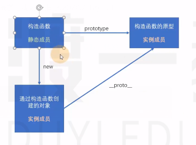
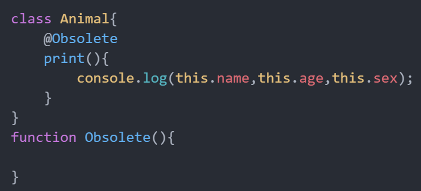
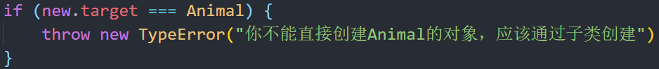

一、新增的对象字面量语法
- 成员速写
- 如果对象字面量初始化时，成员的名称来自于一个变量，并且和变量的名称相同，则可以进行简写
- 方法速写
- 对象字面初始化时，方法可以省略冒号和function关键字
- 计算属性名
- 有的时候，初始化对象时，某些属性名可能来自于某个表达式的值，在ES6，可以使用中括号来表示该属性名是通过计算得到的。
二、Object的新增API
- Object.is：用于判断两个数据是否相等，基本上跟严格相等（===）是一致的，除了以下两点：
NaN和NaN相等：Object.is(NaN,NaN) true
+0 和 -0不相等：Object.is(+0 , -0) false
- Object.assign(obj1,obj2)：用于混合对象
会改动第一个对象
可以用展开运算符，但是展开运算符是ES7的内容，那时候还没有ES7
- Object.getOwnPropertyNames的枚举顺序
Object.getOwnPropertyNames方法之前就存在，只不过，官方没有明确要求，对属性的顺序如何排序，如何排序，完全由浏览器厂商决定。
ES6规定了该方法返回的数组的排序方式如下：
先排数字，并按照升序排序
再排其他，按照书写顺序排序
- Object.setPrototypeOf
该函数用于设置某个对象的隐式原型
比如： Object.setPrototypeOf(obj1, obj2)，相当于：
obj1.__proto__ = obj2
三、类：构造函数的语法糖
3.1 传统的构造函数的问题
- 属性和原型方法定义分离，降低了可读性
- 在面向对象中，对一个对象所有成员的定义统称为一个类(属性 + 原型方法)
- 原型成员可以被枚举
- 实际上是不希望枚举出对象原型函数上的方法
- 默认情况下，构造函数仍然可以被当作普通函数使用
3.2 类的特点
类声明不会被提升，与 let 和 const 一样，存在暂时性死区
类中的所有代码均在严格模式下执行
类的所有方法都是不可枚举的
类的所有方法都无法被当作构造函数使用
类的构造器必须使用 new 来调用
四、类的其他书写方式
可计算的成员名
将传进构造函数的参数添加一些判断条件，只有符合条件的形参才能传入到this，怎么办？
以前用Object.defineProperty：可定义某个对象成员属性的读取和设置
使用getter和setter控制的属性，赋值时触发setter，取值触发getter，不在原型上
- 实例成员与静态成员
- 构造函数本身的成员、原型上的方法都叫实例成员

直接添加到构造函数上的成员就是静态成员，静态成员只能由构造函数本身（用类名）进行访问（静态成员不能被对象访问），如Animal.abc=”1”，但是这样写不好，Animal.abc=”1”也属于对象的成员，写在类外面又将对象分离开了
所以在类内部使用static关键字定义静态成员
- 字段初始化器（ES7）
字段初始化器：在类内部直接给变量赋初值
使用static的字段初始化器，添加的是静态成员
没有使用static的字段初始化器，添加的成员位于对象上
ES6只能写静态方法不能写静态属性，ES7能添加静态属性
箭头函数在字段初始化器位置上(相当于给对象添加一个print方法)，this指向当前对象
类表达式：
const A = class{} 匿名类表达式[扩展]装饰器（ES7）(Decorator)：这是一个未来标准，目前浏览器还不支持
横切关注点问题：给函数添加一个提示（日志记录、权限记录、函数是否过时等，这些功能本身与函数没有关系，只起到提示作用），以前可以在函数体里面加一个console.warn()，但是每次修改函数体过于麻烦
装饰器的本质是一个函数

四、类的继承
4.1 类继承
如果两个类A和B，如果可以描述为：B(猫) 是 A(动物)，则A和B形成继承关系
如果B是A，则：
B继承自A
A派生B
B是A的子类
A是B的父类A
如果A是B的父类，则B会自动拥有A中的所有实例成员。
面向对象编程，子类有且只有一个父类
4.2 ES5继承的做法：只能在原型链上模拟，无法从语法上一眼看出继承关系来
在构造函数B里面用构造函数A生成对象(用call改变this指向)，这样不能继承构造函数A原型链上的方法
Object.setPrototype(B.prototype,A.prototype)：将构造函数B.prototype的原型设置为A.prototype，这样就可以继承A原型链上的方法了
4.3 ES6继承做法
extends：继承，用于类的定义
super
直接当作函数调用，表示父类构造函数
注意：ES6要求，如果定义了constructor，并且该类是子类，则必须在constructor的第一行手动调用父类的构造函数(调用一次super)
如果子类不写constructor，则会有默认的构造器，该构造器需要的参数和父类一致，并且自动调用父类构造器
如果当作对象使用，则表示父类的原型
- 方法覆盖：同名方法，通过对象调用时，子类会覆盖父类
4.4 抽象类
- 用JS制作抽象类
抽象类：一般是父类，不能通过该类创建对象
抽象类举例：动物可以有狗，猫，但是你找不出来一个叫动物的东西，所以动物这个类是抽象类，因为压根就没有动物这一具体事物，所以不能直接创建动物这个对象(js里可以创建抽象类对象，但是其他语言语言不允许，估计以后就不能创建了)
- 如何检测是否用抽象类创建了对象？
- 将下面代码放到父类构造函数里面

- 正常情况下，this的指向，this始终指向具体的类的对象